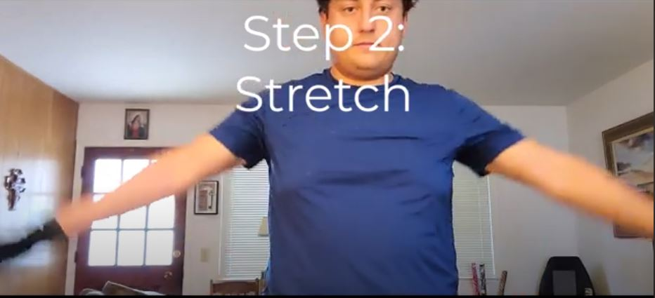
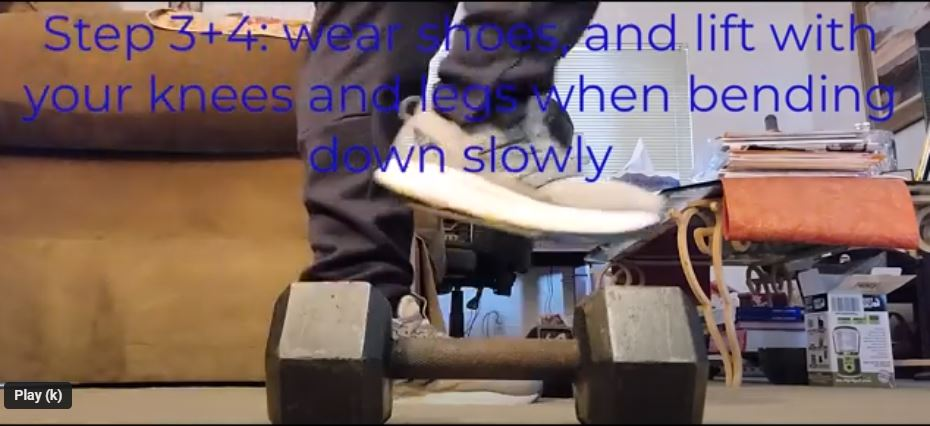

How to accomplish a good workout
By Stefano Cueto
Step 1: Gather equipment and have a space to workout
Before working out, it is important to have both your equipment set up in advanced, and plenty of space to move around!

Step 2: Stretching
Before working out, it is important to stretch out as much as you can, in order to prevent any strain or injur.

Step 3: Footware and bending down
Before you life weights in this example picture, make sure to have the proper footware on, and then bend down to lift up your weight.

Step 4: Slow, controlled movement when lifting
while lifting, make sure to make your workout count by doing, slow, deliberate lifting. What this accomplishes is you using your muscles, without straining them.

Step 5: Strething afterwards
Upon completeion, make sure to stretch again. Then, you are done!